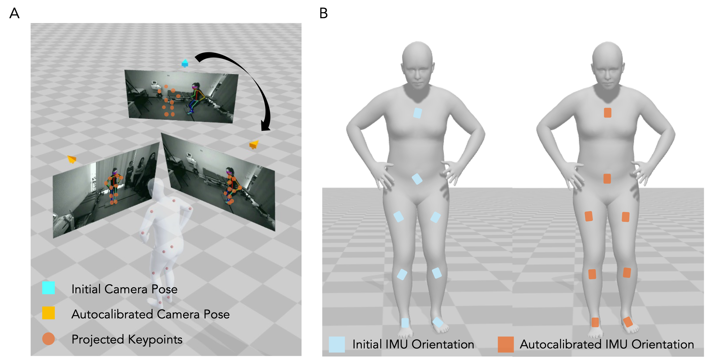
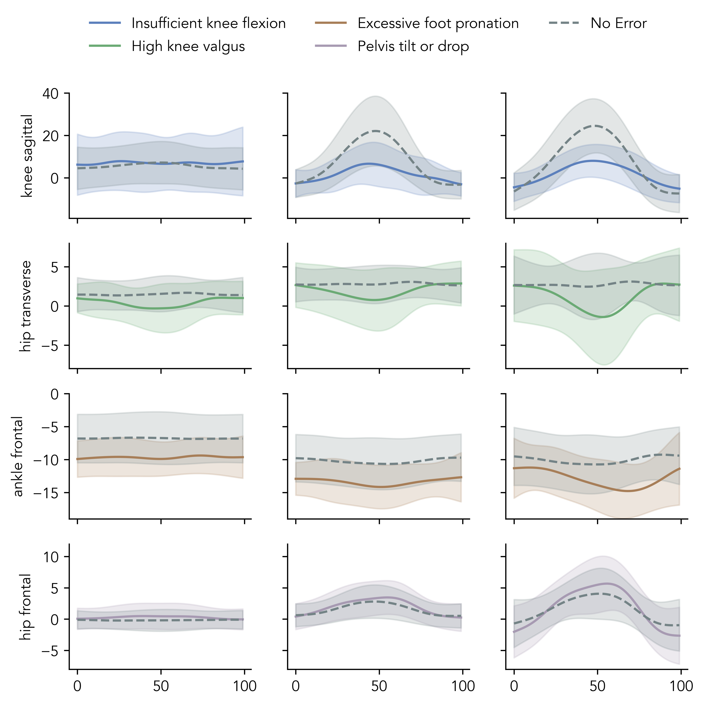
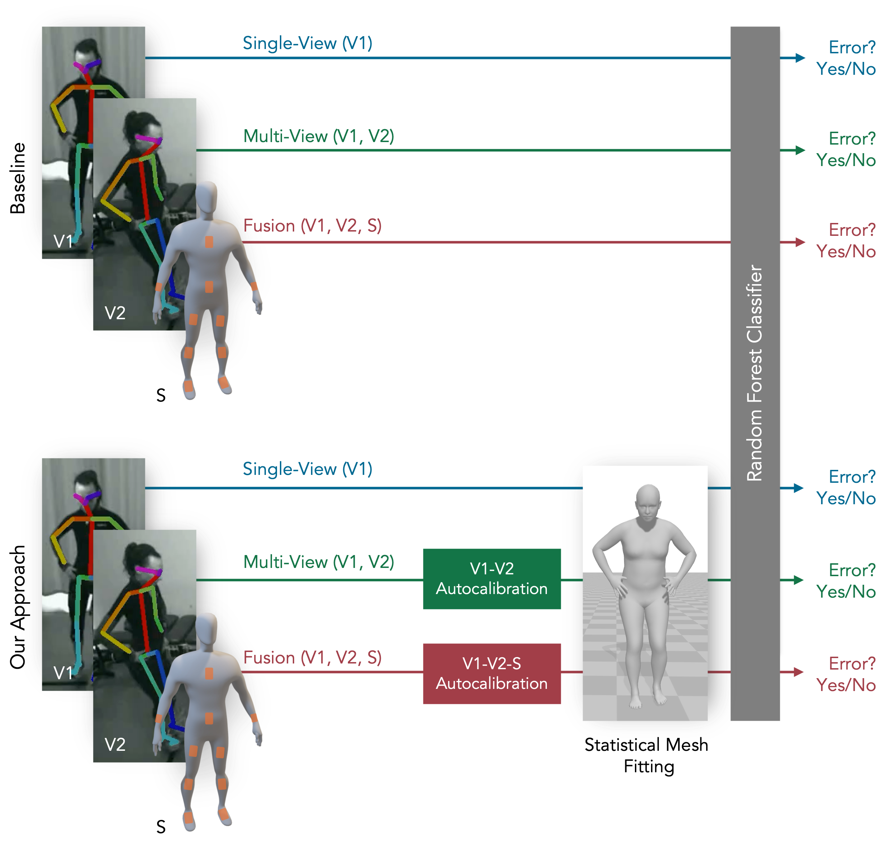
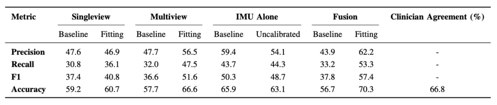

Physical Therapy Assessment Automation from Uncalibrated Inputs
Uncalibrated RGB + IMU pipeline for automated PT performance evaluation
We evaluate PT exercise quality of patients using uncalibrated multi-view video and wearable IMUs. The pipeline auto-calibrates cameras and IMU-to-bone alignment to fit a statistical body model to recover joint kinematics. Using these kinematics as input features, we train a classifier to identify exercise errors. Our method, trained on 38 subjects performing step-ups (509 correct / 315 incorrect), approaches inter-clinician agreement when used with more than one camera—suggesting its potential for automating PT assessment in both clinical and at-home settings.
Method: Autocalibration

Qualitative Output

Classification Pipeline

- Extracted joint angles + derivatives mirror clinician reasoning.
- Random-Forest classifier detects: insufficient knee flexion, outward trunk lean, and hip hiking.
- Compared against baselines using raw joint positions.
Classification Performance
